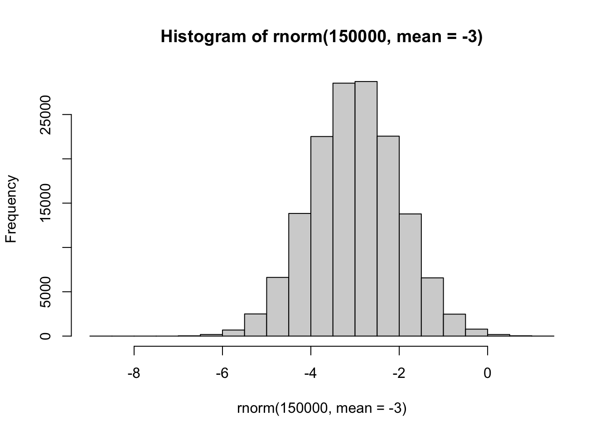
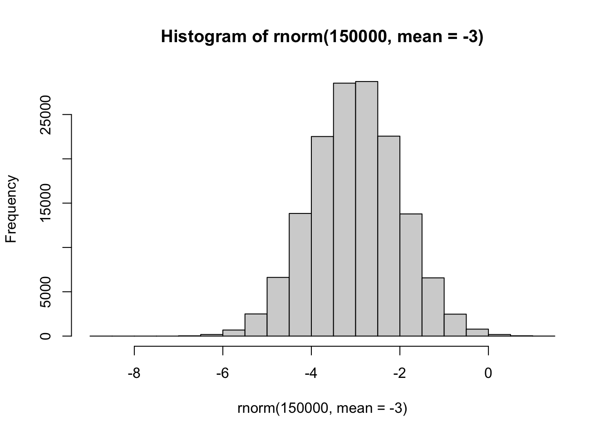
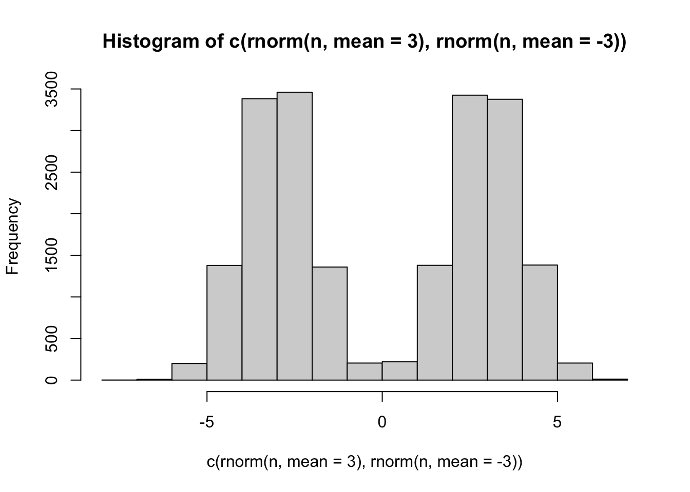
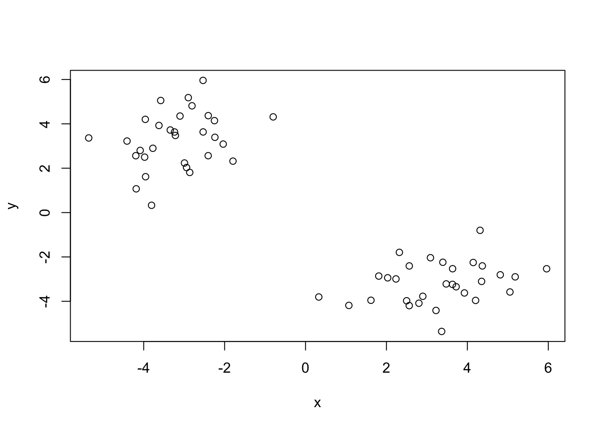
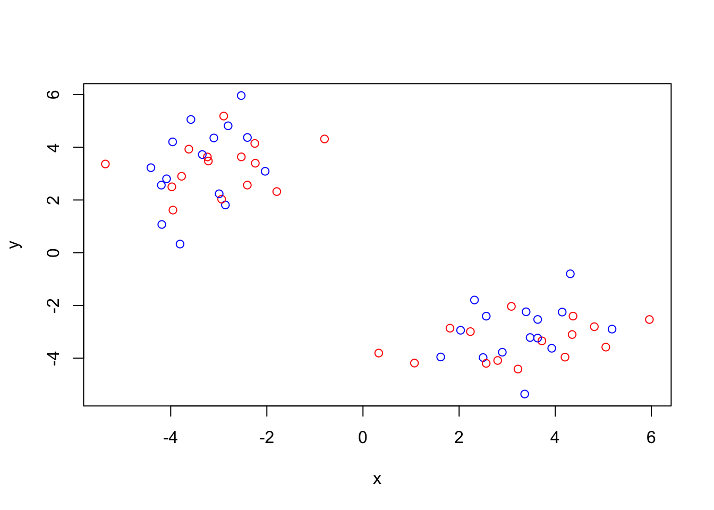
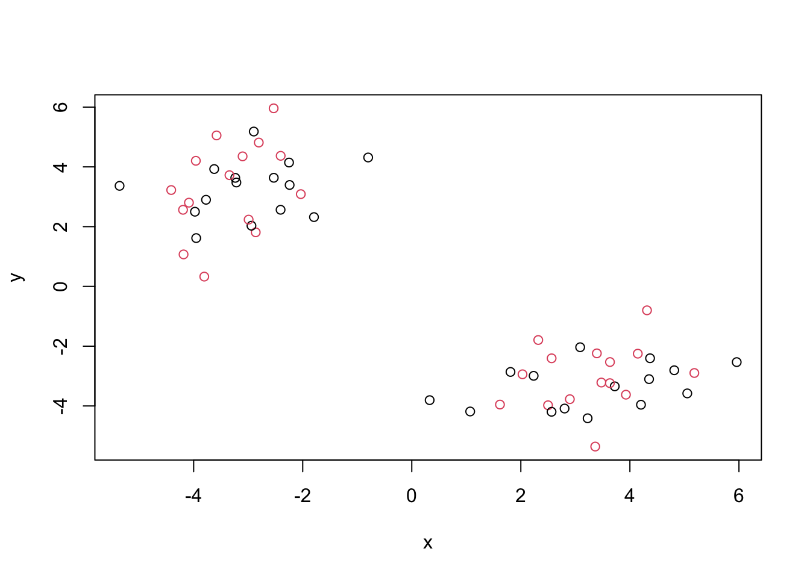
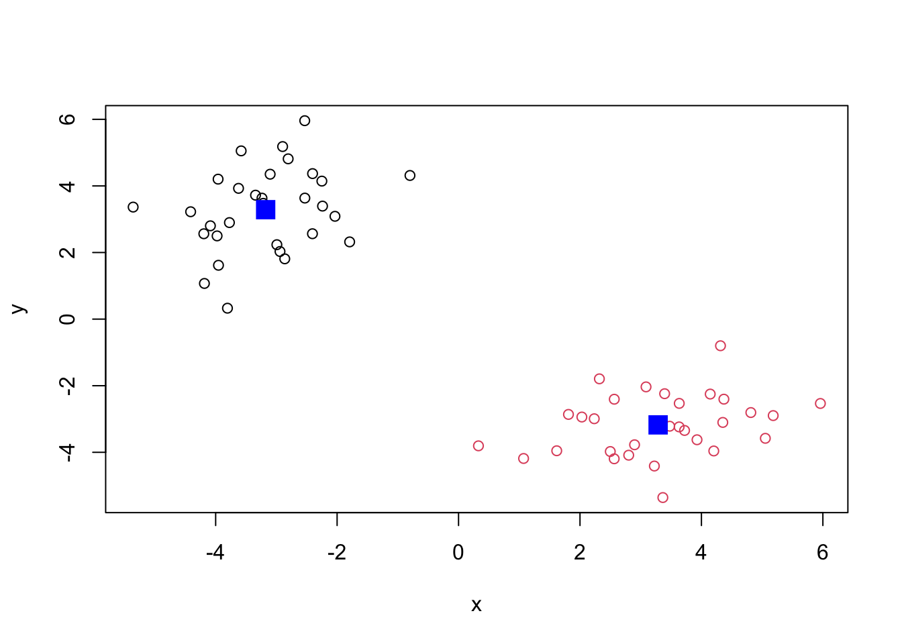
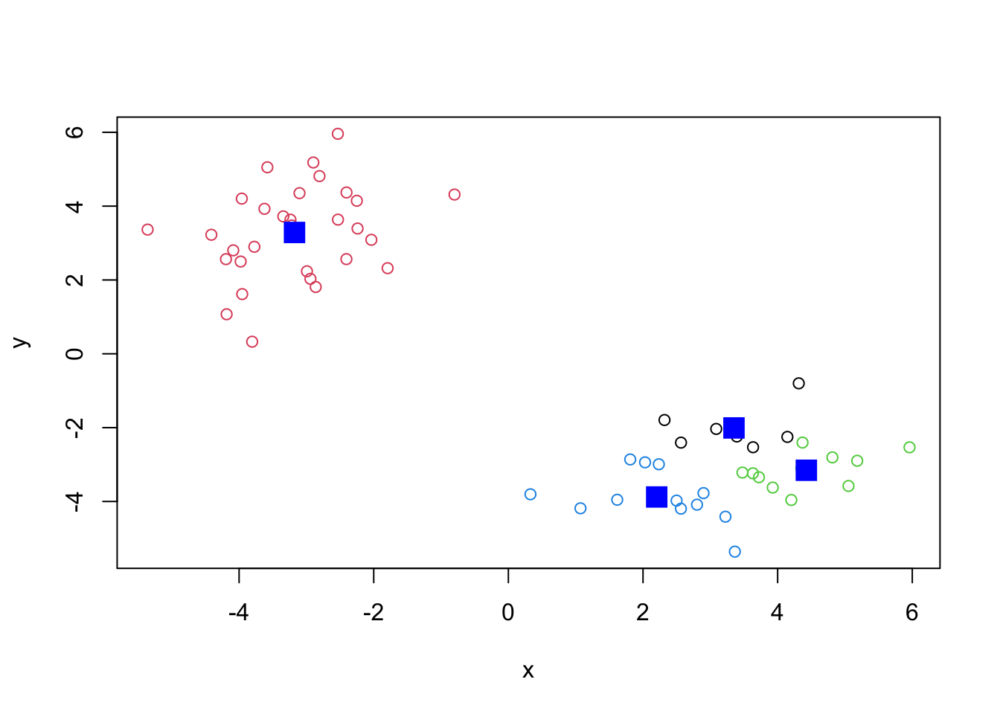
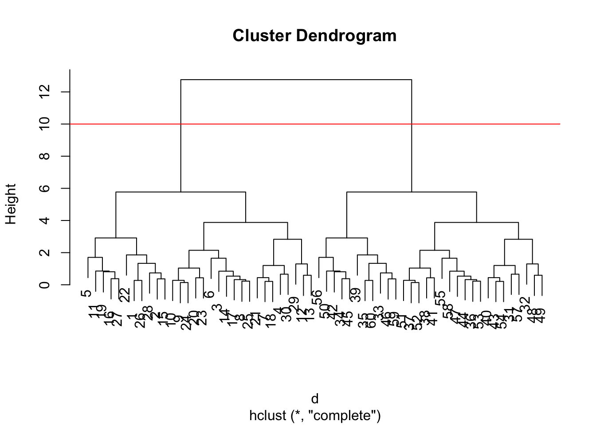
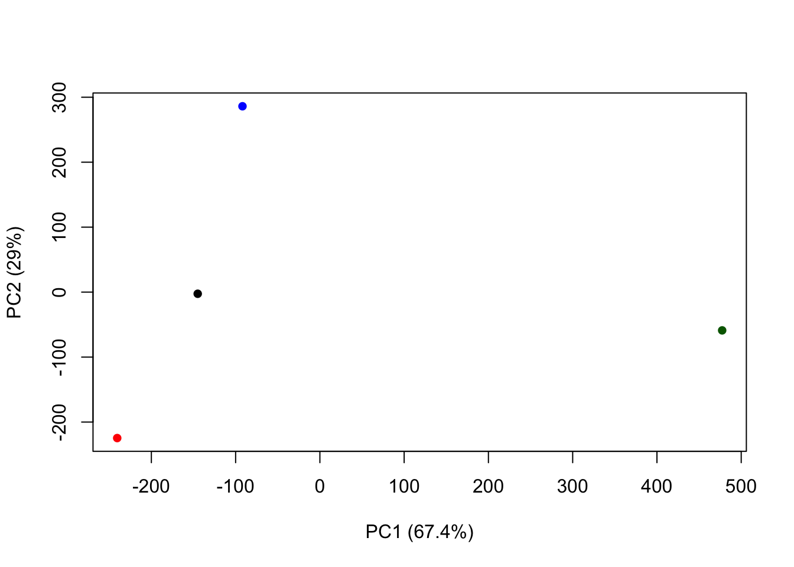

hist(rnorm(150000,mean=-3))
Before we get into clustering methods let’s make some sample data to cluster where we know what the answer should be.
To help with this I will use the rnorm() function.
hist(rnorm(150000,mean=-3))
n=10000
hist(c(rnorm(n,mean=3),rnorm (n,mean=-3)))
n=30
x<-c(rnorm(n,mean=3),rnorm (n,mean=-3))
y<-rev(x)
z<-cbind(x,y)
z x y
[1,] 4.3697486 -2.4042874
[2,] 3.3939292 -2.2400926
[3,] 3.2247273 -4.4121461
[4,] 2.3193592 -1.7934805
[5,] 5.9590399 -2.5330955
[6,] 3.3645237 -5.3588057
[7,] 2.2349896 -2.9920201
[8,] 2.4990556 -3.9764953
[9,] 3.7223381 -3.3435325
[10,] 3.4772615 -3.2166155
[11,] 4.3518579 -3.1026000
[12,] 1.6170370 -3.9535070
[13,] 1.0711172 -4.1852862
[14,] 2.8987289 -3.7734468
[15,] 3.0877221 -2.0350886
[16,] 5.1819262 -2.8973095
[17,] 2.8021987 -4.0866121
[18,] 2.0307955 -2.9403406
[19,] 5.0524902 -3.5799851
[20,] 3.9272267 -3.6232248
[21,] 1.8102140 -2.8618762
[22,] 4.3138920 -0.7999434
[23,] 4.2033472 -3.9598412
[24,] 3.6326422 -3.2371245
[25,] 2.5632993 -4.1951088
[26,] 4.1447663 -2.2509254
[27,] 4.8135678 -2.8059029
[28,] 3.6347558 -2.5310024
[29,] 0.3278734 -3.8055947
[30,] 2.5645638 -2.4060189
[31,] -2.4060189 2.5645638
[32,] -3.8055947 0.3278734
[33,] -2.5310024 3.6347558
[34,] -2.8059029 4.8135678
[35,] -2.2509254 4.1447663
[36,] -4.1951088 2.5632993
[37,] -3.2371245 3.6326422
[38,] -3.9598412 4.2033472
[39,] -0.7999434 4.3138920
[40,] -2.8618762 1.8102140
[41,] -3.6232248 3.9272267
[42,] -3.5799851 5.0524902
[43,] -2.9403406 2.0307955
[44,] -4.0866121 2.8021987
[45,] -2.8973095 5.1819262
[46,] -2.0350886 3.0877221
[47,] -3.7734468 2.8987289
[48,] -4.1852862 1.0711172
[49,] -3.9535070 1.6170370
[50,] -3.1026000 4.3518579
[51,] -3.2166155 3.4772615
[52,] -3.3435325 3.7223381
[53,] -3.9764953 2.4990556
[54,] -2.9920201 2.2349896
[55,] -5.3588057 3.3645237
[56,] -2.5330955 5.9590399
[57,] -1.7934805 2.3193592
[58,] -4.4121461 3.2247273
[59,] -2.2400926 3.3939292
[60,] -2.4042874 4.3697486plot(z)
The function in base R for k-means clustering is called kmeans().
km<-kmeans(z,center=2)
kmK-means clustering with 2 clusters of sizes 30, 30
Cluster means:
x y
1 -3.17671 3.28650
2 3.28650 -3.17671
Clustering vector:
[1] 2 2 2 2 2 2 2 2 2 2 2 2 2 2 2 2 2 2 2 2 2 2 2 2 2 2 2 2 2 2 1 1 1 1 1 1 1 1
[39] 1 1 1 1 1 1 1 1 1 1 1 1 1 1 1 1 1 1 1 1 1 1
Within cluster sum of squares by cluster:
[1] 71.56589 71.56589
(between_SS / total_SS = 89.7 %)
Available components:
[1] "cluster" "centers" "totss" "withinss" "tot.withinss"
[6] "betweenss" "size" "iter" "ifault" km$centers x y
1 -3.17671 3.28650
2 3.28650 -3.17671km$cluster [1] 2 2 2 2 2 2 2 2 2 2 2 2 2 2 2 2 2 2 2 2 2 2 2 2 2 2 2 2 2 2 1 1 1 1 1 1 1 1
[39] 1 1 1 1 1 1 1 1 1 1 1 1 1 1 1 1 1 1 1 1 1 1plot(z,col=c("red","blue"))
plot(z, col=c(1,2))
plot(z, col=km$cluster) #plot with clustering results and cluster centers
points(km$centers, col="blue",pch=15,cex=2) #color the center and make it a square center (pch=15)
Can you cluster our data in z into four clusters?
km4<-kmeans(z,center=4)
plot(z,col=km4$cluster)
points(km4$centers, col="blue",pch=15,cex=2)
The main function for hierarchical clustering is base R is called hclust(). Unlike kmeans() I cannot just pass in my data as input. I first need a distance matrix from my data.
d<-dist(z)
hc<-hclust(d)
hc
Call:
hclust(d = d)
Cluster method : complete
Distance : euclidean
Number of objects: 60 hclust plot method
plot(hc)
abline(h=10, col="red")
To get my clustering results, I can “cut” my tree at a given height. To do this, I will use the cutree.
grps<-cutree(hc, h=10)plot(z,hc$grps)url<-"http://tinyurl.com/UK-foods"
x<-read.csv(url,row.names=1)
head(x) England Wales Scotland N.Ireland
Cheese 105 103 103 66
Carcass_meat 245 227 242 267
Other_meat 685 803 750 586
Fish 147 160 122 93
Fats_and_oils 193 235 184 209
Sugars 156 175 147 139barplot(as.matrix(x), beside=T, col=rainbow(nrow(x)))
barplot(as.matrix(x), beside=F, col=rainbow(nrow(x)))
pairs(x, col=rainbow(10), pch=16)
The main function to do PCA in base R is called prcomp()
pca<-prcomp(t(x))
summary(pca)Importance of components:
PC1 PC2 PC3 PC4
Standard deviation 324.1502 212.7478 73.87622 2.921e-14
Proportion of Variance 0.6744 0.2905 0.03503 0.000e+00
Cumulative Proportion 0.6744 0.9650 1.00000 1.000e+00Let’s see what’s inside our result object pca
attributes(pca)$names
[1] "sdev" "rotation" "center" "scale" "x"
$class
[1] "prcomp"pca$x PC1 PC2 PC3 PC4
England -144.99315 -2.532999 105.768945 -9.152022e-15
Wales -240.52915 -224.646925 -56.475555 5.560040e-13
Scotland -91.86934 286.081786 -44.415495 -6.638419e-13
N.Ireland 477.39164 -58.901862 -4.877895 1.329771e-13To make our main result figure, called a PC plot (or score plot, ordination plot, PC1 vs.PC2):
plot(pca$x[,1],pca$x[,2], col=c("black", "red","blue", "darkgreen"), pch=16, xlab="PC1 (67.4%)", ylab="PC2 (29%)")
par(mar=c(10, 3, 0.35, 0))
barplot( pca$rotation[,1], las=2 )
pca$rotation PC1 PC2 PC3 PC4
Cheese -0.056955380 0.016012850 0.02394295 -0.409382587
Carcass_meat 0.047927628 0.013915823 0.06367111 0.729481922
Other_meat -0.258916658 -0.015331138 -0.55384854 0.331001134
Fish -0.084414983 -0.050754947 0.03906481 0.022375878
Fats_and_oils -0.005193623 -0.095388656 -0.12522257 0.034512161
Sugars -0.037620983 -0.043021699 -0.03605745 0.024943337
Fresh_potatoes 0.401402060 -0.715017078 -0.20668248 0.021396007
Fresh_Veg -0.151849942 -0.144900268 0.21382237 0.001606882
Other_Veg -0.243593729 -0.225450923 -0.05332841 0.031153231
Processed_potatoes -0.026886233 0.042850761 -0.07364902 -0.017379680
Processed_Veg -0.036488269 -0.045451802 0.05289191 0.021250980
Fresh_fruit -0.632640898 -0.177740743 0.40012865 0.227657348
Cereals -0.047702858 -0.212599678 -0.35884921 0.100043319
Beverages -0.026187756 -0.030560542 -0.04135860 -0.018382072
Soft_drinks 0.232244140 0.555124311 -0.16942648 0.222319484
Alcoholic_drinks -0.463968168 0.113536523 -0.49858320 -0.273126013
Confectionery -0.029650201 0.005949921 -0.05232164 0.001890737